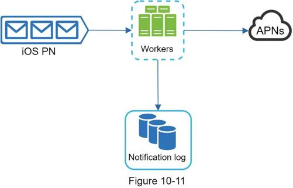
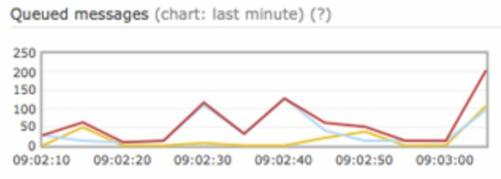
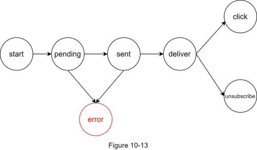
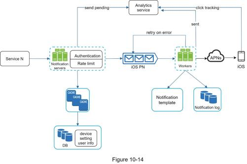

In the high-level design, we discussed different types of notifications, contact info gathering flow, and notification sending/receiving flow. We will explore the following in deep dive:
•Reliability.
•Additional component and considerations: notification template, notification settings, rate limiting, retry mechanism, security in push notifications, monitor queued notifications and event tracking.
•Updated design.
We must answer a few important reliability questions when designing a notification system in distributed environments.
How to prevent data loss?
One of the most important requirements in a notification system is that it cannot lose data. Notifications can usually be delayed or re-ordered, but never lost. To satisfy this requirement, the notification system persists notification data in a database and implements a retry mechanism. The notification log database is included for data persistence, as shown in Figure 10-11.

Will recipients receive a notification exactly once?
The short answer is no. Although notification is delivered exactly once most of the time, the distributed nature could result in duplicate notifications. To reduce the duplication occurrence, we introduce a dedupe mechanism and handle each failure case carefully. Here is a simple dedupe logic:
When a notification event first arrives, we check if it is seen before by checking the event ID. If it is seen before, it is discarded. Otherwise, we will send out the notification. For interested readers to explore why we cannot have exactly once delivery, refer to the reference material [5].
We have discussed how to collect user contact info, send, and receive a notification. A notification system is a lot more than that. Here we discuss additional components including template reusing, notification settings, event tracking, system monitoring, rate limiting, etc.
A large notification system sends out millions of notifications per day, and many of these notifications follow a similar format. Notification templates are introduced to avoid building every notification from scratch. A notification template is a preformatted notification to create your unique notification by customizing parameters, styling, tracking links, etc. Here is an example template of push notifications.
BODY:
You dreamed of it. We dared it. [ITEM NAME] is back — only until [DATE].
CTA:
Order Now. Or, Save My [ITEM NAME]
The benefits of using notification templates include maintaining a consistent format, reducing the margin error, and saving time.
Users generally receive way too many notifications daily and they can easily feel overwhelmed. Thus, many websites and apps give users fine-grained control over notification settings. This information is stored in the notification setting table, with the following fields:
user_id bigInt
channel varchar # push notification, email or SMS
opt_in boolean # opt-in to receive notification
Before any notification is sent to a user, we first check if a user is opted-in to receive this type of notification.
To avoid overwhelming users with too many notifications, we can limit the number of notifications a user can receive. This is important because receivers could turn off notifications completely if we send too often.
When a third-party service fails to send a notification, the notification will be added to the message queue for retrying. If the problem persists, an alert will be sent out to developers.
For iOS or Android apps, appKey and appSecret are used to secure push notification APIs [6]. Only authenticated or verified clients are allowed to send push notifications using our APIs. Interested users should refer to the reference material [6].
A key metric to monitor is the total number of queued notifications. If the number is large, the notification events are not processed fast enough by workers. To avoid delay in the notification delivery, more workers are needed. Figure 10-12 (credit to [7]) shows an example of queued messages to be processed.

Figure 10-12
Notification metrics, such as open rate, click rate, and engagement are important in understanding customer behaviors. Analytics service implements events tracking. Integration between the notification system and the analytics service is usually required. Figure 10-13 shows an example of events that might be tracked for analytics purposes.

Putting everything together, Figure 10-14 shows the updated notification system design.

In this design, many new components are added in comparison with the previous design.
•The notification servers are equipped with two more critical features: authentication and rate-limiting.
•We also add a retry mechanism to handle notification failures. If the system fails to send notifications, they are put back in the messaging queue and the workers will retry for a predefined number of times.
•Furthermore, notification templates provide a consistent and efficient notification creation process.
•Finally, monitoring and tracking systems are added for system health checks and future improvements.